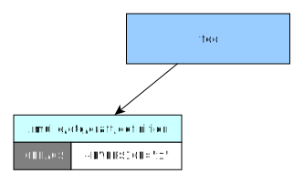

üíÑ Definition isolator
The mulle-sde virtual environment shields the project from unintentional environment settings. But that is not enough separation, if the project is made up of multiple projects (a.k.a. “dependencies”).
Here is a contrived example. The main project get its current version via the
commandline like cc -DVERSION='"1"'. Lets use the mulle-sde environment to
set CFLAGS, assuming that this is picked up by the Makefile.
mulle-sde environment set CFLAGS '-DVERSION="1"'
It will work fine, until you add a third-party dependency, which also uses a
VERSION definition. As the mulle-sde environment is active during the build
of the project and the build of the dependency, there will be a clash.
Definitions: environments for a build
mulle-make is the meta-builder, that uses build systems like cmake and autoconf and xcodebuild, to build a dependency or the project itself. That may sound fancy, but is really not much more than what this little script does:
#! /bin/sh
if [ -f CMakeLists.txt ]
then
cmake -B build -S .
cmake --build build
else
# use some other build tool
fi
One thing mulle-make adds to the process, is that it looks at variables that start with the string ‘DEFINITION_’ and uses those to create options for the individual build tool (unknown options are passed verbatim).
For example the value of DEFINITION_CFLAGS='-DVERSION="1"' will be used
by the cmake plugin of mulle-make to produce a
-DCMAKE_C_FLAGS='-DVERSION="1"' command line option for cmake.
So how are DEFINITION_ variables set in mulle-make ? They are fed to
mulle-make by another tool mulle-craft. mulle-craft searches for applicable
definition folders and applies them to the mulle-make call. There can be
multiple definitions, which enables inheritance schemes.
Project definitions
The main project definition folder is managed with the mulle-sde definition
commands. The values contained in it are only used for the main project and can
not be overridden.

cd foo
cc -DVERSION='"1"' ...
Dependency definitions
A dependency definition is just a project definition from a different
perspective. Here a third party project may very well also have a definition
folder, if it is a mulle-sde project. This definition will be used during
its build. But it will not interfere with the main project craft.
(
cd foo/stash/bar
cc -DVERSION='"2"' ...
)
cd foo
cc -DVERSION='"1"' ...
Project craftinfos
The project has the option to override dependency definitions with craftinfos.
This is especially useful for third party projects, that are not mulle-sde
projects. With a craftinfo you can tweak the build process of that dependency
to your liking without having to edit the dependency source itself.
The values in the craftinfo will usually override the values in the
definition of the dependency. So -DVERSION="3" will be in effect for
the craft of “bar”.
(
cd foo/stash/bar
cc -DVERSION='"3"' ...
)
cd foo
cc -DVERSION='"1"' ...
Inherited definitions
Maybe the most powerful feature of the mulle-sde build system are inherited
definitions. These definitions are installed by dependencies into the
dependency/share folder and can affect all consecutive dependencies.
This for example allows the switch of compilers during the craft of
dependencies.
Multiple dependencies can add and subtract from these definitions.
(
cd foo/stash/bar
cc -DVERSION='"3"' ...
)
cd foo
mulle-clang -DVERSION='"1"' ...
Inherited definitions can augment the definitions of the main project, but it can not override them.
Inherited definitions can override the definitions of dependencies, but it does not override craftinfos.